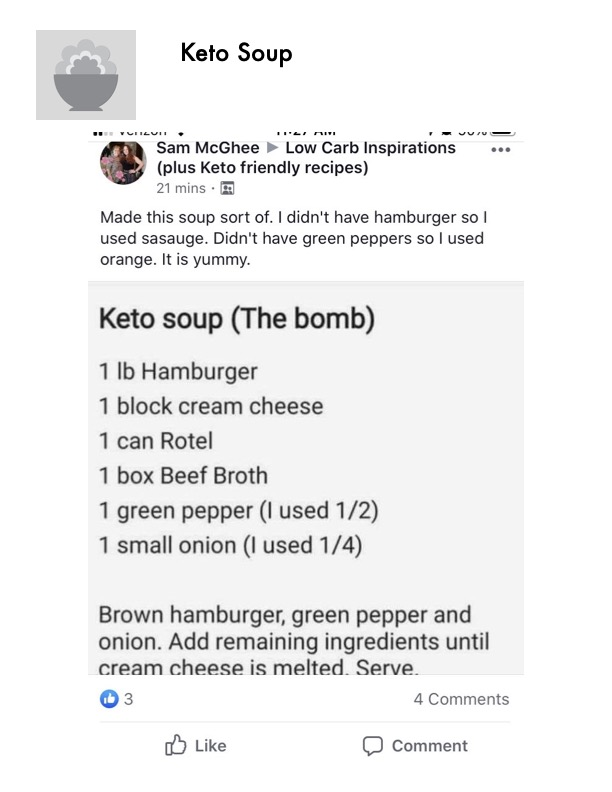

Keto Soup (The Bomb)

Original cookbook page 30
A simple, hearty keto-friendly soup that comes together quickly with just a handful of ingredients. Versatile enough to swap sausage for hamburger or use different colored peppers.
Prep: 5 minutes • Cook: 15-20 minutes • Total: 20-25 minutes
Ingredients
- 1 lb hamburger (ground beef)
- 1 block cream cheese
- 1 can Rotel (diced tomatoes & green chilies)
- 1 box beef broth
- 1 green pepper (can use 1/2)
- 1 small onion (can use 1/4)
Instructions
- In a large pot, brown the hamburger along with the diced green pepper and chopped onion over medium-high heat. Cook until the meat is fully browned and the vegetables are softened. Drain excess grease if needed.
- Add the can of Rotel, the box of beef broth, and the block of cream cheese to the pot.
- Stir everything together and continue cooking over medium heat until the cream cheese is fully melted and the soup is well combined and heated through.
- Serve and enjoy!
Recipe #30 from collection